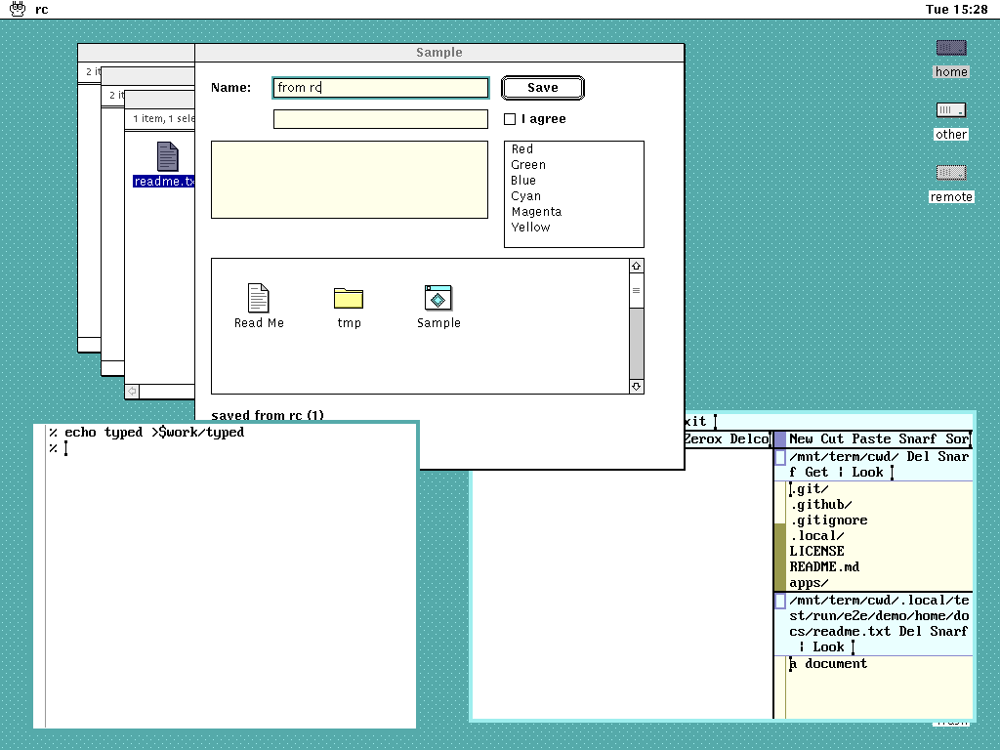
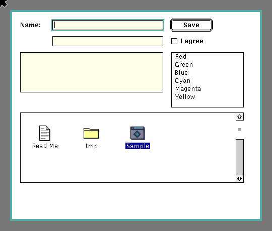

9/UX brings the classic Mac and A/UX desktop (a spatial Finder, a global menu bar, consistent controls and dialogs, icons, and resource-driven presentation) to 9front, built the Plan 9 way: rio and libdraw draw the screen, 9P exposes every application's UI state and commands as files, namespaces define the working environment, the plumber opens documents, and ndb holds human-editable metadata.
Keep the Macintosh's direct-manipulation desktop, but make every meaningful object, action, and resource visible as a Plan 9 file.
It is not an emulator, a Macintosh ABI, or an A/UX reimplementation. Native 9front programs stay first-class, and existing rio programs (acme, sam, rc windows, nested rio) keep working unchanged beside 9/UX apps.
The pieces:
These are real frames, not mockups. The GUI tests embed h9 with a headless screen, inject mouse and keyboard input, and drive the 9P files at the same time.

from rcand its Save button pressed through ctl; a double click in Finder plumbed a text file to acme; and an ordinary rc window is still moved and typed into.

Macintosh structure, Plan 9 colour: butter title bars from rio's selection yellow, acme's cream and olive, and rio's greygreen for the desktop, so 9/UX windows and legacy rio windows sit together on one screen. Everything reads in one bit, uses a sixteen-colour palette, and is drawn in whole pixels. Every graphic is original to 9/UX; it ships no Apple resources. The mockups below are generated from the same palette and metrics files as the code.


The design document describes 9/UX and its v0.1 acceptance criteria; release.md has where each one stands, the end-to-end demo, and the open issues. Every interface between components is a file protocol in docs/protocols, and the visual design covers the palette, fonts, metrics, chrome, icons and cursors.
The source is on GitHub, under the MIT license. Development runs on h9, which runs 9front's own compilers, mk and rio directly from the host shell, without booting a VM. scripts/h9.sh clones and builds the pinned h9 on its first run:
git clone https://github.com/progrium/9ux cd 9ux scripts/h9.sh --rc 'mk' scripts/h9.sh --gfx rio/7.out -u scripts/test.sh
Use rio/6.out on amd64. development.md and testing.md have the details.
9/UX is at v0.1 and under active development. Interfaces and behaviour change without notice.
Please report bugs and send questions through GitHub issues.